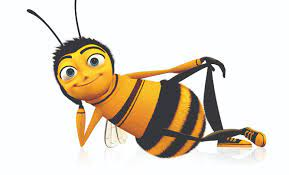

Fresh out of college, Barry the Bee finds the prospect of working with honey uninspiring. He flies outside the hive for the first time and talks to a human, breaking a cardinal rule of his species. Barry learns that humans have been stealing and eating honey for centuries, and he realizes that his true calling is to obtain justice for his kind by suing humanity for theft.
 Read The Script